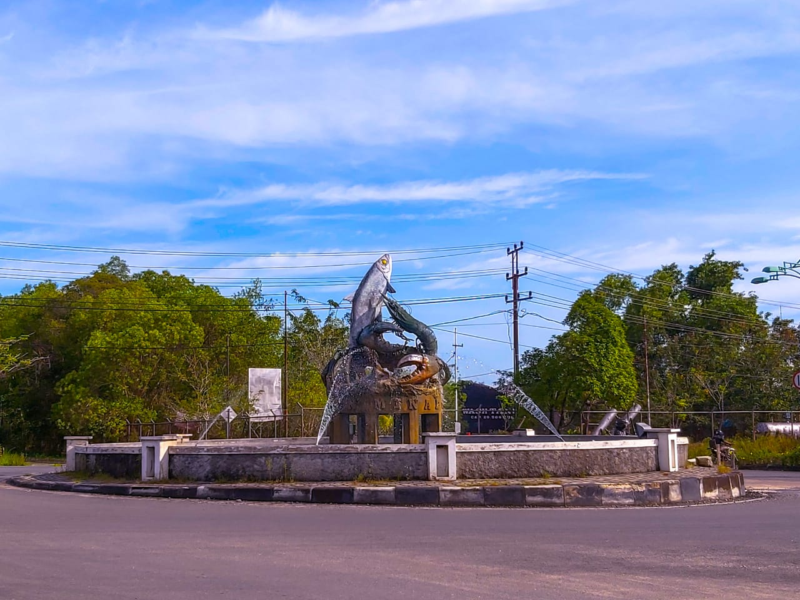
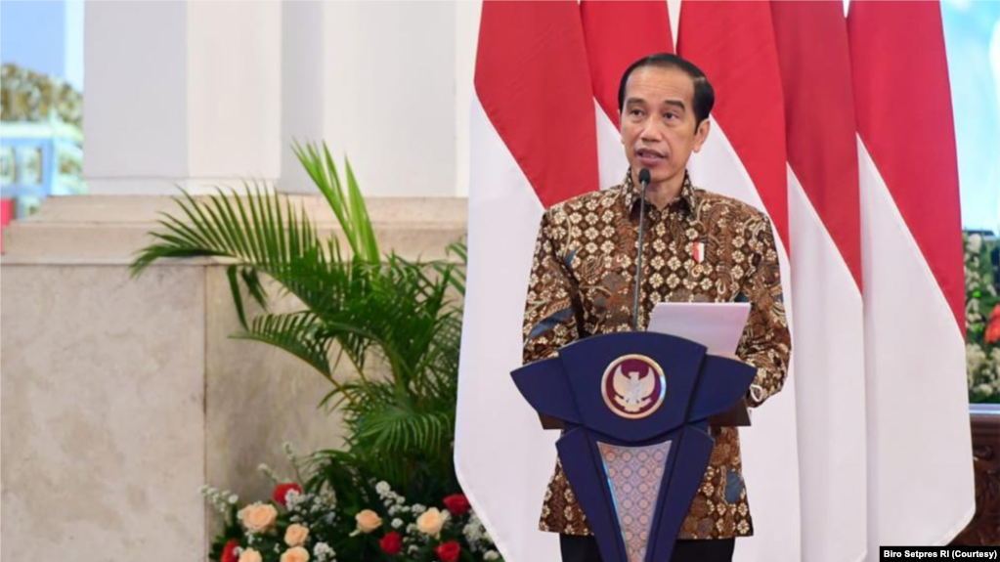

Pesona Tarakan, Kota di Ujung Utara Borneo

Tarakan merupakan satu-satunya kota yang berada di ujung utara Pulau Kalimantan tepatnya di Wilayah Provinsi Kalimantan Utara. Kata Tarakan berasal dari Bahasa Tidung yang artinya tempat singgah (tarak) dan makan (ngakan). Oleh karena itu, Tarakan memiliki makna sebagai tempat persinggahan, istirahat, dan melakukan barter bagi Nelayan dari Kerajaan Tidung.
Dikenal sebagai Bumi Paguntaka, Kota Tarakan saat ini memiliki semboyan “BAIS” yang berarti Bersih, Aman, Indah, Sehat dan Sejahtera. Dengan wilayah seluas 250,80 km2 dan jumlah penduduk mencapai 280.215 jiwa pada tahun 2020, Tarakan menjadi daerah dengan mobilitas tertinggi diantara daerah-daerah lain di wilayah Kalimantan Utara.
Letak dan posisinya yang stategis serta melimpahnya sumber daya alam yang dimiliki, membuat Kota Tarakan tidak luput dari wilayah jajahan Belanda. Pada Tahun 1896, sebuah perusahaan minyak dengan nama BPM (Bataavishe Petroleum Maatchapij) menemukan adanya sumber minyak di Tarakan. Sejak saat itu, pemerintah Belanda mulai mendatangkan tenaga kerja dari Jawa untuk meningkatkan produktivitas pengeboran minyak. Hasil produksi minyak saat itu terus meningkat hingga mencapai 350.000 barel minyak per bulan. Bahkan sampai saat ini, aktifivitas pengeboran minyak masih berlanjut. Di berbagai penjuru Kota Tarakan masih banyak dijumpai pompa angguk yang masih beroperasi.
Bangunan bersejarah peninggalan kerajaan Suku Tidung pun hingga kini masih berdiri tegak. Bangunan yang dijadikan sebagai salah satu destinasi wisata populer yaitu Balai Adat dan Budaya Tidung serta Baloy Adat Mayo
Tarakan juga memiliki Festival rutin yang sering digelar oleh masyarakat Suku Tidung sebagai upacara tradisional yaitu Festival Iraw Tengkayu. Festival ini berupa upacara ritual dengan menghanyutkan sesaji ke laut dan berbagai macam perlombaan.
Iraw Tengkayu memiliki dua arti kata yang diambil dari Bahasa Tidung. Iraw yang berarti perayaan atau pesta, sedangkan Tengkayu adalah pulau kecil yang dikelilingi oleh laut, yang dimaksud pulau kecil di sini adalah Pulau Tarakan. Inti dari Festival Iraw Tengkayu yang sudah berlangsung secara turun-temurun ini adalah arak-arakan perahu Padaw Tuju Dulung, yaitu perahu hias yang diarak keliling kota. Perayaan Festival Iraw Tengkayu dilaksanakan setiap dua tahun sekali dan bertepatan dengan hari jadi kota Tarakan.
Selain wisata budaya, Tarakan yang tergolong dalam pembangunan kota yang cukup pesat memiliki daya tarik wisata lainnya seperti Kawasan Konservasi Mangrove dan Bekantan. Kawasan Konservasi Mangrove dan Bekantan (KKMB) atau lebih dikenal dengan Hutan Mangrove Tarakan terletak di Karang Rejo, Tarakan Barat. Kawasan seluas 22 hektare ini menyimpan beraneka ragam flora dan fauna di dalamnya. Bekantan, satwa pemalu yg sering disebut 'Monyet Belanda' di Tarakan jumlahnya sekitar 37 ekor. Makanan asli dari satwa tersebut bukanlah pisang, melainkan pucuk daun mangrove tertentu atau pucuk bakau yang tumbuh subur di tempat ini.
Destinasi wisata lain yang menjadi favorit masyarakat Kota Tarakan yaitu Pantai Amal Lama. Pantai ini memiliki keistimewaan tersendiri saat kita berkunjung ke sana. Selain menikmati pemandangan pantai dan sejuknya angin laut, kita bisa menikmati kuliner yang ditawarkan oleh penduduk lokal. Menu makanan yang terkenal dan menjadi andalan di Pantai Amal adalah Kerang Kapah. Makanan ini dimasak secara sederhana dengan cara direbus menggunakan bumbu seperti bawang putih, sereh, dan jahe dan disajikan dengan sambal jeruk khas Tarakan yang sangat nikmat. Selain kerang Kapah, terdapat menu lain yang tidak kalah nikmat yakni udang goreng, buras dan gorengan. Menikmati senja dan bersantai di Pantai Amal dapat menjadi pilihan untuk menghabiskan waktu yang menyenangkan.
Sumber: Direktorat Jenderal Kekayaan Negara
Menyelami Keindahan Alam dan Kebudayaan Tersembunyi di Desa Sidemen
Desa Sidemen, sebuah permata tersembunyi di pegunungan timur Bali, menghadirkan pengalaman yang menenangkan dan keindahan alam yang tiada tanding. Terletak di bawah Gunung Agung, desa ini mempersembahkan pemandangan pedesaan yang menakjubkan, dengan sawah terasering menari-nari di bawah sinar matahari, dan kehidupan masyarakat yang terikat dalam tradisi dan kebudayaan Bali.
Sidemen, diapit oleh hijaunya puncak-puncak pegunungan dan rerimbunan sawah teras yang memikat, menampilkan latar belakang yang tak tergoyahkan untuk menjalani petualangan atau merentangkan langkah dengan sepeda, sembari menikmati senyapnya desa yang tenang. Masyarakat Sidemen, penuh kehangatan dan kerendahan hati, menyambut pengunjung dengan senyuman tulus, siap membagikan budaya dan riwayat hidup desa.
Sungai Unda, yang mengalir di tengah-tengah desa, menambah pesona Sidemen dengan kejernihan dan hijaunya. Bagi jiwa-jiwa petualang dan penjelajah, Sidemen menghamparkan jalur-jalur mendaki yang menantang, membawa kaki menyusuri teras sawah yang gemerlap, atau menjelajahi desa-desa tersembunyi yang berselubung misteri di sekitarnya.
Selain keindahan alam, Sidemen dikenal sebagai pusat kerajinan tenun Bali yang otentik. Sidemen berperan sebagai panggung bagi kesenian tenun tradisional yang tak lekang oleh waktu. Rumah-rumah tenun menyembunyikan rahasia teknik tenun kuno yang masih dilakukan secara turun temurun. Kita dapat melihat secara langsung proses pembuatan kain tradisional, seperti kain songket dan kain endek, yang merupakan bagian penting dari warisan budaya Bali.
Sumber: Godevi
Jokowi: Indonesia Harus Mampu Ciptakan Teknologi Canggih
 -->
Presiden Joko Widodo mengungkapkan Indonesia selama ini hanya bisa menerima tekonologi-teknologi canggih dari berbagai negara maju, padahal Indonesia berpotensi menciptakan sebuah teknologi tersebut.
Menurut perusahaan, Devin telah melewati wawancara teknik dari perusahaan AI terkemuka dan bahkan berhasil menyelesaikan pekerjaan nyata di platform freelance Upwork. Hal ini menimbulkan pertanyaan menarik tentang potensi Devin untuk menggantikan peran seorang insinyur perangkat lunak manusia.
JAKARTA (VOA) — Presiden Joko Widodo menilai selama ini Indonesia belum mampu membangun sebuah teknologi yang canggih, padahal Indonesia punya sumber daya alam berlimpah. Menurut Jokowi, Indonesia harus mulai untuk tidak hanya membeli proyek jadi atau turn key.“Ini penting sekali, ini sering kita hanya terima kunci, terima jadi. Akhirnya berpuluh-puluh tahun kita tidak bisa membuat teknologi itu. Jadi jangan sekedar membeli mesin jadi, sekaligus bersama seluruh ahlinya,” ungkapnya dalam acara Peresmian Pembukaan Rapat Kerja Nasional Penguatan Ekosistem Inovasi Teknologi Badan Pengkajian dan Penerapan Teknologi (BPPT) Tahun 2021 di Istana Negara, Senin (8/3).
Ia menekankan BPPT harus menjadi lembaga akuisisi teknologi. Caranya, yaitu bekerja sama dengan negara-negara maju untuk memproduksi teknologi di Indonesia. Kerja sama itu harus melibatkan pakar teknologi dan peneliti di Tanah Air, sehingga terjadi transfer ilmu pengetahuan dan pengalaman. “Sekarang ini teknologi berjalan sangat cepat sekali dan teknologi yang kita butuhkan untuk pemulihan ekonomi nasional mungkin saja belum diproduksi di dalam negeri. Jadi strategi akuisisi teknologi dari luar negeri menjadi kunci percepatan pembangunan ekonomi kita,”
Lanjutnya, Jokowi ingin BPPT menjadi pusat kecerdasan teknologi Indonesia. Apalagi, saat ini dunia memasuki era artificial intelligence atau kecerdasan buatan (AI). Menurutnya, siapapun yang bisa menguasai era tersebut, akan berpotensi menguasai dunia. Untuk itu, dia meminta BPPT untuk mensinergikan talenta-talenta Tanah Air di bidang teknologi mulai dari diaspora, peneliti universitas, start-up teknologi, dan anak muda yang militan untuk berkontribusi menciptakan sebuah teknologi canggih di masa depan.
“Bangun mesin AI induk, yang bisa memfasilitasi gotong-royong antarinovator dan peneliti, memfasilitasi kecerdasan komputer dan kecerdasan manusia untuk mendukung keunggulan ekonomi yang tidak konvensional dan sekaligus efektif," katanya.
Fokus BPPT
Dalam kesempatan yang sama, Kepala BPPT Hammam Riza, mengungkapkan pada tahun ini pihaknya fokus untuk mengembangkan berbagai teknologi, mulai dari teknologi kesehatan, khususnya untuk penanganan COVID-19, teknologi tepat guna pangan, serta teknologi pencegah stunting atau kerdil pada anak dan pertanian cerdas (smart farming)
Di bidang teknologi kebencanaan, pihaknya juga sedang membangun infrastruktur sistem peringatan dini tsunami bersama Badan Meteorologi, Klimatologi dan Geofisika (BMKG) dan Badan Nasional Penanggulangan Bencana (BNPB), serta teknologi modifikasi cuaca yang bisa dimanfaatkan untuk pencegahan kebakaran hutan dan lahan (karhutla) dan upaya redistribusi curah hujan untuk pencegahan bencana banjir.
“BPPT berperan dalam implementasi sistem pemerintahan berbasis elektronik serta melaksanakan big data untuk mendukung satu data Indonesia. Sejalan pula dengan revolusi 4.0 kami menginisasi strategi nasional AI untuk menjadi masukan bagi rancangan Perpres terkait dengan kolaborasi untuk inovasi kecerdasan artifisial,” ungkap Hammam.
Sumber: VOA Indonesia